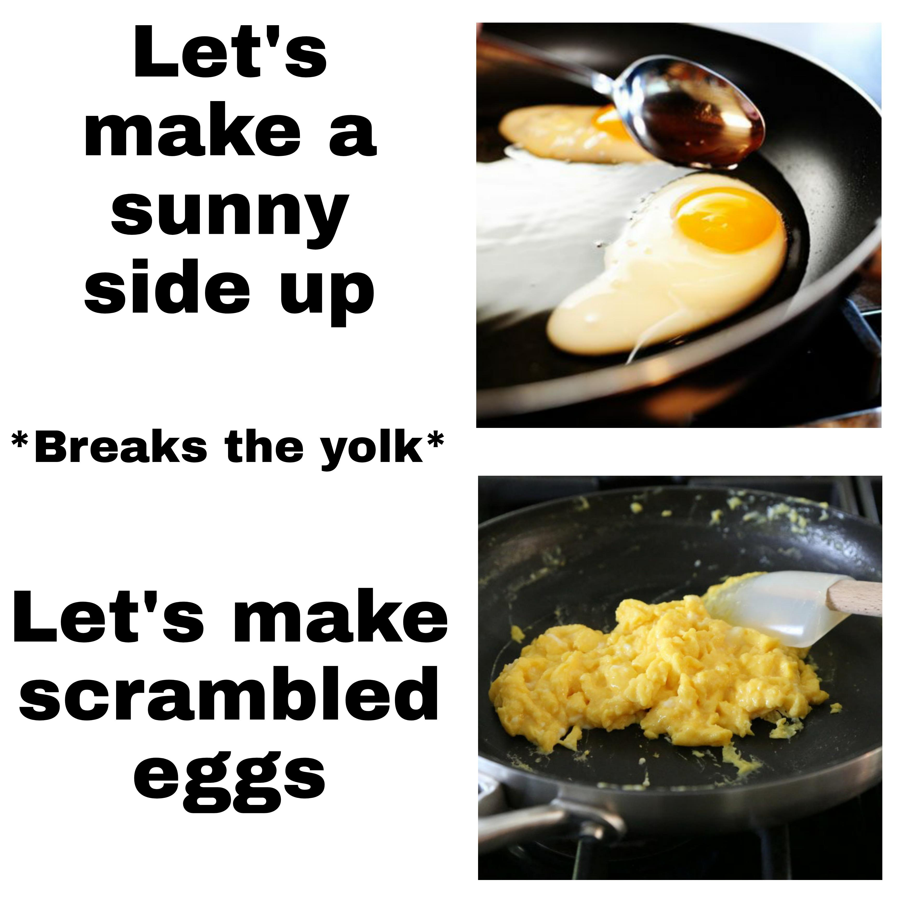

Home Page
Extra and affordable proteins for all CS students!
(AKA The "Bachelor of Scrambled Eggs")

Ah yes, scrambled eggs, the classic meal of broke college students, exhausted parents, and people
who forgot to go grocery shopping. It is the ultimate “I have nothing else in my fridge”,
requiring just eggs, heat, and the will to survive in the next day. Whether you’re cooking at 3 AM in
your underwear or trying to impress absolutely someone,
these fluffy little protein blobs will get the job done. Perfect for when you want a meal
that says,
“I tried” but not too hard.
Ingredients (because your firdge is basically empty)
- 2 eggs (or however many you allowed)
- Salt & pepper (pretend you are seasoning like Gordon Ramsay)
- Butter
Steps
- Crack eggs into a bowl without getting shells in (well, good luck buddy!)
- Whisk aggressively like you are venting about life.
- heat up the pan with butter, then pour in your egg.
- Stir gently
- Cook until they look edible. (Or you can drink it. doesn't matter)
- Serve in a bowl or eat straight from the pan